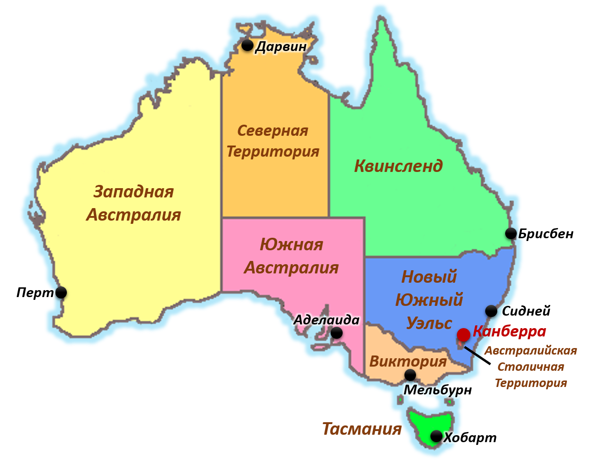

🏠 Домой
Переход на главный сайт
Вы уверены, что хотите перейти на главную страницу проекта?
Да, перейти
Нет, остаться
Обновление v0.2 — Что нового:
Адаптив для телефонов и ПК
Кнопка "Домой" в правом углу
Карта на весь экран
Новая галерея: 1 фото + стрелки + 4 квадрата
Поддержка видео (квадрат 4)
Серый фон вместо синего
Полные описания 100+ слов
Исправлены координаты точек
Нажмите в любом месте, чтобы продолжить

Западная Австралия
×
←
→
v0.2